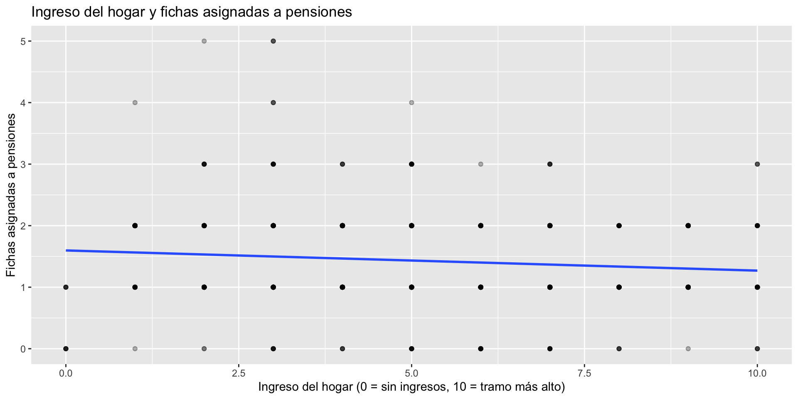

![]()
850 + 150 # dos tandas de encuestas, sumadas
#> [1] 1000Taller de introducción a R con la Encuesta ICSOH-UDP
Análisis de datos de clima social en ciencias sociales
07 julio, 2026
Objetivo del taller
Este taller busca darles las primeras herramientas para programar en R aplicado al análisis de datos en ciencias sociales. Vamos a trabajar con una muestra de la Encuesta ICSOH-UDP, un instrumento de opinión pública que mide el clima social y político en Chile.
Al terminar, ustedes van a poder cargar una base de datos de encuesta, explorarla, recodificarla, y producir sus primeras tablas y gráficos descriptivos, todo con código que puedan repetir y adaptar.
Lo que sí vamos a ver
- Qué es R y cómo se usa junto a RStudio
- Los elementos básicos del lenguaje: objetos, vectores, tipos de datos
- Herramientas para cargar, ordenar y limpiar datos de encuestas
- Estadística descriptiva: frecuencias, promedios y gráficos simples
Lo que no vamos a ver
- Cómo instalar R y RStudio en tu computador (revisa la guía de instalación aparte)
- Cómo escribir tus propias funciones o loops
- Modelos estadísticos (regresiones, tests de hipótesis, etc.)
Todo esto lo pueden seguir aprendiendo después, una vez que tengan las bases 🙂
¿Qué se van a llevar?
- Van a perder el miedo a la pantalla en blanco de un script
- Van a saber leer un mensaje de error y no entrar en pánico
- Van a poder cargar cualquier base de encuesta y darle una primera mirada
- Van a poder responder preguntas simples con datos: ¿cuántas personas piensan X?, ¿cómo varía Y según Z?
La Encuesta ICSOH-UDP
- Encuesta de opinión pública sobre clima social, económico y político en Chile, levantada por el Instituto de Ciencias Sociales de la Universidad Diego Portales
- Metodología: encuesta online autoaplicada, con cuotas que buscan representar la dispersión regional del país
- La versión completa considera del orden de 1.500 casos; nosotros trabajaremos con una muestra reducida de 1.000 casos, pensada exclusivamente para fines de enseñanza
- Más información: icso.udp.cl/nosotros/encuesta
La ola que usaremos incluye preguntas sobre el gobierno de José Antonio Kast y la segunda vuelta presidencial de noviembre de 2025, así que corresponde a una medición reciente del clima social.
Flujo de trabajo

Datos → limpieza → análisis → resultados. Todo documentado en un script que pueden volver a correr cuantas veces quieran.
¿Qué es R?
R es un lenguaje de programación pensado para trabajar con datos: analizarlos, transformarlos y visualizarlos.

¿Para qué lo vamos a usar?
- Para cargar y limpiar bases de encuestas
- Para construir tablas y gráficos de forma reproducible
- Para dejar registrado cada paso de nuestro análisis
¿Por qué usar R?
Gratuito
R es de código abierto, lo mantiene su propia comunidad de usuarias y usuarios, y no vas a tener que pagar licencias para usarlo.
Pensado para datos
A diferencia de otros lenguajes de programación de propósito general, R nació para el análisis estadístico, así que sus herramientas calzan naturalmente con lo que hacemos en ciencias sociales.
Reproducible
Un script de R deja registrado cada paso de tu análisis: si te equivocas, corriges una línea y vuelves a correr todo, sin tener que repetir manualmente nada.
¿Qué se puede hacer con R?
- Limpiar y recodificar bases de datos de encuestas
- Construir tablas de frecuencias y estadísticas descriptivas
- Generar gráficos para informes y presentaciones
- Hacer mapas, dashboards, reportes automáticos, y más
La gracia es que, una vez que aprendes la lógica básica, todo lo demás se trata de ir sumando herramientas nuevas según lo que necesites.
RStudio
RStudio es un entorno de desarrollo (IDE) que nos permite escribir y ejecutar código en R de forma más cómoda y visual que la consola sola.
- Es la forma más popular de trabajar con R
- Es software libre
- También existe Positron, una alternativa más moderna

Conceptos clave
Script
Un archivo de texto .R (o .qmd) donde escribimos nuestro código en orden, paso a paso, para poder volver a ejecutarlo cuando queramos.
Consola
El lugar donde R ejecuta cada instrucción, una a la vez. Lo que se escribe directo en la consola no queda guardado.
Proyecto
Un archivo .Rproj que define una carpeta como nuestro espacio de trabajo, reuniendo datos, scripts y resultados en un mismo lugar.
Paneles de RStudio

1 Scripts
2 Consola
3 Entorno
4 Archivos
Consola y scripts
- Todo comando de R se ejecuta en la consola, que es donde vive R
- Lo que escribes directo en la consola se ejecuta, pero no se guarda
- Para guardar tu trabajo, escribes en un script
- Con el cursor en la línea que quieres correr, usa el botón Run o
control/cmd + enter

Botones útiles
- Crear un nuevo script
- Ejecutar la línea o selección actual
- Ejecutar todo el script de una vez
- Abrir o crear un proyecto nuevo
Vamos a ir probando estos botones a medida que avancemos.
Introducción a R
Antes de trabajar con la encuesta, veamos los elementos más básicos del lenguaje.

R como calculadora
- Podemos escribir cualquier operación matemática directamente en R
- Para ejecutarla, pon el cursor en la línea y presiona
control/cmd + enter - El resultado aparece en la consola
Comentarios
- Un comentario empieza con
#: todo lo que sigue en esa línea no se ejecuta - Sirven para explicar qué hace tu código, o para desactivar una línea sin borrarla
- Son fundamentales para que tu script se entienda meses después, o para que otra persona lo entienda
Operaciones lógicas
Comparan dos valores y devuelven TRUE o FALSE.
Tipos de datos
Lo que podemos hacer con un dato depende de su tipo.
Objetos
Cuando queremos reutilizar un dato o resultado, lo guardamos en un objeto: le damos un nombre y le asignamos un contenido.
nombre ← contenido
Asignación
Con el operador <- creamos o modificamos objetos.
<-
Se escribe con:
Windows:
Mac:

Al asignar, creamos o modificamos un objeto. Al ejecutarlo, obtenemos su contenido.
Vectores
Un vector es una secuencia de elementos del mismo tipo: la forma más básica de guardar varios datos a la vez.
Y ahora la buena noticia: cada columna de una base de datos ya es un vector.
Operaciones sobre vectores
Como es un vector numérico, podemos calcular funciones sobre él, como el promedio:
fichas_salud viene de una pregunta donde cada persona reparte 10 fichas de gasto público entre distintas áreas: aquí vemos cuántas, en promedio, se destinan a salud.
Bases de datos (data frames)
Un data frame es una tabla: cada fila es un caso (una persona encuestada) y cada columna es una variable.
La base que vamos a usar durante todo el taller ya es un data frame:
datos |>
select(sexo, tramo_edad, region, gse) |>
head()
#> # A tibble: 6 × 4
#> sexo tramo_edad region gse
#> <fct> <ord> <fct> <chr>
#> 1 Mujer 18-29 Maule C2
#> 2 Hombre 30-49 Maule D
#> 3 Hombre 18-29 Antofagasta ABC1
#> 4 Mujer 18-29 Biobío C2
#> 5 Hombre 30-49 Metropolitana C2
#> 6 Mujer 50-99 Metropolitana DHerramientas básicas de procesamiento de datos
- Paquetes
- Cargar datos
- Observar datos
- Estructura de la bbdd
- Manipular datos con
{dplyr} - Guardar y exportar
Paquetes

- Extensiones que agregan funciones nuevas a R
- Se instalan una vez desde internet, y se cargan cada sesión
- Los mantiene la comunidad de R
- Piénsalos como cajones de cocina: cada paquete guarda herramientas específicas, y uno va abriendo el cajón que necesita para la tarea que tiene entre manos
Para instalar y cargar de una vez usamos {pacman}: si el paquete ya está instalado, solo lo carga; si no, lo instala primero.
Hoy vamos a usar {dplyr} y {ggplot2} para procesar y graficar, y {sjlabelled}, {sjmisc}, {naniar} y {sjPlot}, pensados especialmente para datos de encuestas.
Datos
Para cargar datos necesitamos:
- Un archivo, y conocer su formato (RData, Excel, Stata, CSV, etc.)
- Que el archivo esté guardado dentro del proyecto
- Una función, y a veces un paquete, que sepa leer ese formato
Cargar datos
Nuestra base viene en formato .RData, el formato nativo de R. Se carga con load(), y el objeto aparece con el nombre que traía guardado:
Otros formatos comunes
{readxl}para leer planillas Excel (read_excel()){readr}para csv, rds y otros formatos de texto{haven}para archivos SPSS, Stata y SAS, muy comunes en encuestas
Observar datos
head(): primeras filasnames(): nombres de las columnasdim(): número de filas y columnasView(): abre la tabla completa en una pestaña
Estructura de la bbdd
Con glimpse() vemos el tipo de cada columna y sus primeros valores:
datos |>
select(sexo, tramo_edad, region, gse, ideologia, autoubicacion_izq_der) |>
glimpse()
#> Rows: 1,000
#> Columns: 6
#> $ sexo <fct> Mujer, Hombre, Hombre, Mujer, Hombre, Mujer, Hom…
#> $ tramo_edad <ord> 18-29, 30-49, 18-29, 18-29, 30-49, 50-99, 50-99,…
#> $ region <fct> Maule, Maule, Antofagasta, Biobío, Metropolitana…
#> $ gse <chr> "C2", "D", "ABC1", "C2", "C2", "D", "C3", "ABC1"…
#> $ ideologia <fct> Izquierda, Centro, Derecha, Derecha, Ninguno, De…
#> $ autoubicacion_izq_der <fct> 4, 5, 6, 7, Sin identificación política, 10. Der…Datos etiquetados
Como ya convertimos las etiquetas al cargar los datos, datos no tiene columnas haven_labelled: son factores normales. Pero no perdimos nada, porque las etiquetas quedan documentadas.
get_label() nos recuerda la pregunta original de una variable:
Y sus categorías ya se ven como texto legible, no como números:
sjmisc::frq(datos$eval_gobierno_kast)
#> ¿Cómo evalúa usted el gobierno de José Antonio Kast hasta ahora? (x) <categorical>
#> # total N=1000 valid N=998 mean=2.08 sd=0.67
#>
#> Value | N | Raw % | Valid % | Cum. %
#> ------------------------------------------------------------
#> De manera más bien positiva | 185 | 18.50 | 18.54 | 18.54
#> De manera más bien negativa | 550 | 55.00 | 55.11 | 73.65
#> Ni positiva ni negativa | 263 | 26.30 | 26.35 | 100.00
#> <NA> | 2 | 0.20 | <NA> | <NA>{dplyr}
- Paquete para explorar, filtrar y transformar datos
- Sus funciones se escriben como verbos:
select(),filter(),mutate()… - Se encadenan con el conector
|>(también existe%>%)

Seleccionar
select() elige columnas por su nombre:
datos |>
select(sexo, tramo_edad, region, ideologia) |>
head()
#> # A tibble: 6 × 4
#> sexo tramo_edad region ideologia
#> <fct> <ord> <fct> <fct>
#> 1 Mujer 18-29 Maule Izquierda
#> 2 Hombre 30-49 Maule Centro
#> 3 Hombre 18-29 Antofagasta Derecha
#> 4 Mujer 18-29 Biobío Derecha
#> 5 Hombre 30-49 Metropolitana Ninguno
#> 6 Mujer 50-99 Metropolitana DerechaRenombrar
rename() le cambia el nombre a una columna sin tocar su contenido:
Filtrar
filter() conserva solo las filas que cumplen una condición:
datos |>
filter(quintil_ingreso == "Q1") |>
select(quintil_ingreso, region, gse) |>
head()
#> # A tibble: 6 × 3
#> quintil_ingreso region gse
#> <ord> <fct> <chr>
#> 1 Q1 Maule C3
#> 2 Q1 Ñuble E
#> 3 Q1 Antofagasta E
#> 4 Q1 Antofagasta E
#> 5 Q1 Biobío C3
#> 6 Q1 Libertador Gral. Bernardo O'Higgins DRecodificar y transformar
mutate() crea o modifica columnas. Con if_else() resolvemos una condición simple:
Como gob_buen_camino ya es un factor con categorías legibles, comparamos directamente contra el texto de las categorías que nos interesan.
case_when() para varias categorías
Cuando hay más de dos opciones, case_when() evalúa condiciones en orden. Aquí aprovechamos que as.integer() sobre un factor devuelve la posición de cada categoría, que en este caso ya viene ordenada de menor a mayor ingreso:
Valores perdidos
- En una encuesta, no todas las personas responden todo: eso genera valores perdidos (
NA) - El paquete
{naniar}está pensado justo para diagnosticar cuántos y dónde están
miss_var_summary() ordena las variables de más a menos incompletas:
Guardar y exportar
Guardamos siempre en un objeto nuevo, para no perder ni sobreescribir los datos originales.
Herramientas para analizar datos
- Resumiendo datos
- Variables categóricas
- Variables numéricas
- Bivariados
- Algunos gráficos
Resumiendo datos
summarize() reduce toda la tabla a un solo resultado; group_by() lo hace por grupos:
fichas_seguridad son las fichas de gasto público que cada persona asignó a seguridad; vemos que quienes se identifican de derecha le asignan, en promedio, bastantes más que quienes se identifican de izquierda.
Variables categóricas
Para ver la distribución de una variable categórica, usamos sjmisc::frq():
sjmisc::frq(datos$gse)
#> x <character>
#> # total N=1000 valid N=1000 mean=2.65 sd=1.15
#>
#> Value | N | Raw % | Valid % | Cum. %
#> --------------------------------------
#> ABC1 | 207 | 20.70 | 20.70 | 20.70
#> C2 | 225 | 22.50 | 22.50 | 43.20
#> C3 | 328 | 32.80 | 32.80 | 76.00
#> D | 189 | 18.90 | 18.90 | 94.90
#> E | 51 | 5.10 | 5.10 | 100.00
#> <NA> | 0 | 0.00 | <NA> | <NA>Variables numéricas
Para variables numéricas usamos funciones de resumen o sjmisc::descr():
summary(datos$fichas_salud)
#> Min. 1st Qu. Median Mean 3rd Qu. Max. NA's
#> 0.000 2.000 2.000 2.166 2.000 10.000 1
sjmisc::descr(datos, fichas_salud)
#>
#> ## Basic descriptive statistics
#>
#> var type
#> fichas_salud numeric
#> label
#> Imagine que usted tiene 10 fichas para repartir entre las siguientes áreas de gasto público en Chile. ¿Cuánto le asignaría a cada una? Puede asignar 0 fichas a las áreas que considere menos prioritarias, pero el total debe sumar exactamente 10 - Salu
#> n NA.prc mean sd se md trimmed range iqr skew
#> 999 0.1 2.17 0.87 0.03 2 2.12 10 (0-10) 0 2.9fichas_salud viene de una pregunta donde cada persona reparte 10 fichas de gasto público entre distintas áreas; aquí vemos cuántas fichas, en promedio, se destinan a salud.
Bivariados: categórica × categórica
Con sjPlot::tab_xtab() obtenemos una tabla de contingencia con porcentajes de fila:
| gse | ideologia | Total | |||
|---|---|---|---|---|---|
| Izquierda | Centro | Derecha | Ninguno | ||
| ABC1 | 61 29.5 % |
32 15.5 % |
76 36.7 % |
38 18.4 % |
207 100 % |
| C2 | 71 31.6 % |
21 9.3 % |
81 36 % |
52 23.1 % |
225 100 % |
| C3 | 82 25.1 % |
46 14.1 % |
101 30.9 % |
98 30 % |
327 100 % |
| D | 37 19.6 % |
33 17.5 % |
39 20.6 % |
80 42.3 % |
189 100 % |
| E | 2 3.9 % |
18 35.3 % |
16 31.4 % |
15 29.4 % |
51 100 % |
| Total | 253 25.3 % |
150 15 % |
313 31.3 % |
283 28.3 % |
999 100 % |
| χ2=69.570 · df=12 · Cramer's V=0.152 · p=0.000 | |||||
Bivariados: numérica × categórica
Comparamos las fichas de seguridad asignadas por hombres y por mujeres, y confirmamos la diferencia con una prueba t:
datos |>
group_by(sexo) |>
summarize(fichas_seguridad_prom = mean(fichas_seguridad, na.rm = TRUE), n = n())
#> # A tibble: 3 × 3
#> sexo fichas_seguridad_prom n
#> <fct> <dbl> <int>
#> 1 Hombre 1.70 467
#> 2 Mujer 1.84 522
#> 3 <NA> 1.82 11
t.test(fichas_seguridad ~ sexo, data = datos)
#>
#> Welch Two Sample t-test
#>
#> data: fichas_seguridad by sexo
#> t = -2.1549, df = 981.38, p-value = 0.03141
#> alternative hypothesis: true difference in means between group Hombre and group Mujer is not equal to 0
#> 95 percent confidence interval:
#> -0.25637944 -0.01198656
#> sample estimates:
#> mean in group Hombre mean in group Mujer
#> 1.702355 1.836538El valor p menor a 0,05 sugiere que la diferencia entre hombres y mujeres no se debe solo al azar.
Bivariados: numérica × numérica
Construimos una versión numérica del ingreso del hogar (sus 11 categorías originales, donde la última, “no hubo ingresos”, equivale a 0), y la cruzamos con las fichas asignadas a pensiones:
datos <- datos |>
mutate(ingreso_decil = if_else(as.integer(ingreso_hogar) == 11, 0L, as.integer(ingreso_hogar)))
ggplot(datos, aes(x = ingreso_decil, y = fichas_pensiones)) +
geom_point(alpha = 0.3) +
geom_smooth(method = "lm", se = FALSE) +
labs(title = "Ingreso del hogar y fichas asignadas a pensiones",
x = "Ingreso del hogar (0 = sin ingresos, 10 = tramo más alto)",
y = "Fichas asignadas a pensiones")
cor.test(datos$ingreso_decil, datos$fichas_pensiones)
#>
#> Pearson's product-moment correlation
#>
#> data: datos$ingreso_decil and datos$fichas_pensiones
#> t = -3.6683, df = 997, p-value = 0.0002571
#> alternative hypothesis: true correlation is not equal to 0
#> 95 percent confidence interval:
#> -0.17616279 -0.05376024
#> sample estimates:
#> cor
#> -0.1153996La correlación es negativa y significativa: a mayor ingreso del hogar, se tiende a asignar menos fichas a pensiones.
Algunos gráficos con {ggplot2}
Una barra para una variable categórica:
Densidad para una numérica
Para ver la forma de la distribución completa, en vez de un histograma usamos una curva de densidad:
Un gráfico bivariado
Recursos para seguir aprendiendo
Este taller se inspira en los materiales abiertos de Bastián Olea (proyecto Aprende R), a quien agradecemos por compartir su trabajo con la comunidad.
Consejos finales
- Mantengan su propio cuaderno de aprendizajes 📝
- Lean con calma los errores: casi siempre dicen exactamente qué falló
- Si algo sale mal, revisen paso a paso, y si hace falta, empiecen de nuevo
- Usen la IA como apoyo puntual, no como reemplazo de entender lo que hacen
- Compartan lo que van aprendiendo con sus colegas ✨
Gracias
Cualquier duda o comentario, escríbanme a andreas.laffert@uchile.cl
Ahora vamos a la práctica: en la segunda parte de este bloque aplicaremos todo esto paso a paso sobre la misma base, en script_taller_clima.R.